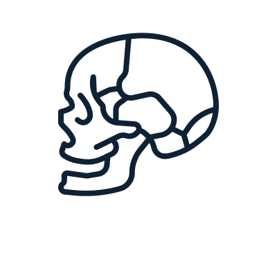
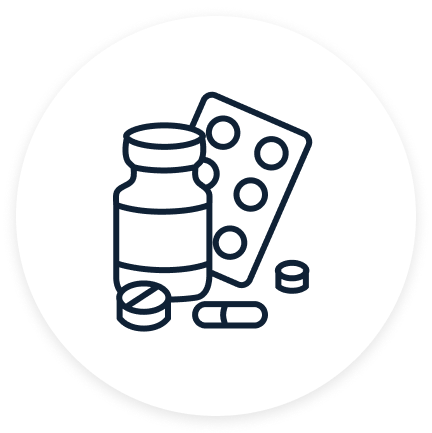
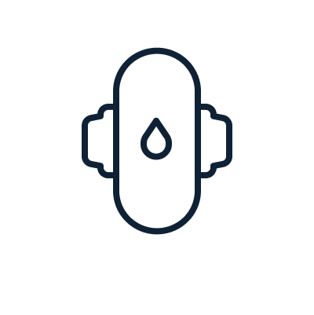
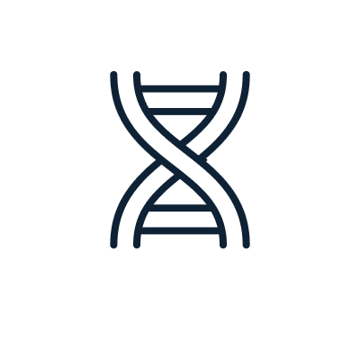
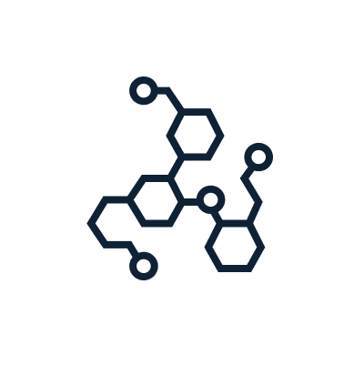
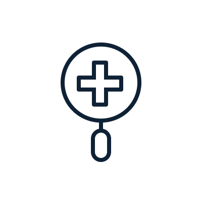

Herminology
Terminology for her.
Hertility Health 
Anatomy

Basics

Conditions 
Contraception 
Cycle 
Genetics 
Hormones
Symptoms 
Treatments
Hertility
We provide you with access to information about your reproductive health whilst guiding you through your fertility journey, from couch to clinic.
ReProductive
When you are productive with your reproductive health, and make informed decisions when it matters, not when it’s too late.
AFAB
An acronym for “assigned female at birth”. This term refers to a person who was born with female reproductive organs but does not identify as this gender.
Cervix
The narrow, cylinder-shaped passage that forms the lower end of your uterus, and it is this area of tissue that separates the vagina from the rest of your uterus.
Cervical Fluid/Mucus
The fluid secreted by the cervix. It has two main roles; to prevent things from entering the uterus through the cervix, and to nourish and transport sperm through the cervix to the uterus. Throughout your cycle your mucus changes, due to fluctuating hormone levels, and can highlight how fertile you are.
Endometrium
The inner lining of your uterus, which thickens throughout your cycle and then sheds as you period.
Fallopian Tube
The path your egg follows once released from the ovary during ovulation, to the uterus, where it awaits fertilisation.
Ovary
The almond-sized gland that sits at the end of your fallopian tubes. Most are born with two ovaries, that produce and house your eggs until they are mature enough to leave in search of a sperm - AKA ovulation. Ovaries also produce primary sex hormones, oestrogen and progesterone.
Pelvis
The bony structure located between the abdomen and legs, which supports the intestines and houses your bladder and reproductive system. Your pelvis is usually broader and wider to give you the ability to undergo pregnancy and childbirth.
Thyroid
A butterfly-shaped gland located at the front of your throat which acts as the conductor of your hormonal orchestra. It regulates your metabolism, heart and digestive function, growth and development and temperature.
Uterus
A muscular sac located between the bladder and the rectum. Throughout your monthly cycle, the inner lining of the uterus thickens with blood, in preparation for a fertilised egg to implant itself.
Vagina
The muscular canal that connects the vulva (the outer parts of your genitals) to the uterus.
Menstruation
More commonly known as your period, this is the normal vaginal bleeding that takes place as part of your monthly cycle.
Microbiome
The genetic material of all the microbes that live on and inside the human body, such as bacteria, fungi, protozoa and viruses. Some microbes help our bodily functions, like the good bacteria in our gut. The bad guys that can cause diseases are called pathogens. Studies show that some of the pathogens that cause STIs such as chlamydia and gonorrhoea can lead to infertility.
Ovarian Reserve
This refers to the number of eggs you have remaining in your ovaries. This number declines with age until you reach menopause. You each have a unique fertility curve, so everyone's ovarian reserve changes at a different rate.
Papanicolaou Test
AKA a pap smear is the test that involves collecting cells from your cervix to help detect cervical cancer or precancerous cells.
Adenomyosis
A condition in which the inner lining of the uterus breaks through the muscle wall. Its symptoms can include menstrual cramps, lower abdominal pain, bloating and heavy periods.
Endometriosis
A chronic condition where tissue similar to the lining of a uterus, decides to go wandering and grow in places outside of the uterus, such as the ovaries and fallopian tubes, causing pain.
Uterine Fibroids
Non-cancerous growths that grow in or around the uterus. As many as 1 in 3 will develop fibroids.
Hormonal Acne
Acne caused by a fluctuation of your hormones. Common during puberty, but can develop at any age.
Hypothalamic Amenorrhea
A condition in which menstruation stops for several months due to a problem involving the hypothalamus. The hypothalamus is in the centre of the brain and controls reproduction. This is typically linked with stress, weight loss and/or excessive physical exercise.
Hypothyroidism (Underactive Thyroid)
When the thyroid gland doesn’t produce enough hormones. Symptoms include: tiredness, weight gain, depression, being sensitive to cold, dry skin and hair and muscle aches. Thyroid problems can also affect your fertility.
PCOS
Polycystic Ovarian Syndrome (PCOS) is a common endocrine disorder affecting 1 in 5 of reproductive age. Named after the appearance of the tiny fluid-filled follicular sacs in the ovaries, that house your immature eggs. Thought to be caused by an increase in androgens and a sensitivity to insulin.
Premenstrual Dysphoric Disorder (PMDD)
A severe form of PMS that can include symptoms such as depression, anxiety and even suicidal thoughts. It affects around 5-10% of those who menstruate.
Premenstrual Syndrome (PMS)
The name given to the symptoms you experience in the weeks leading up to your period. Linked to the changes in your hormones during the menstrual cycle the symptoms of PMS include: feeling anxious/upset/irritable, fatigue or insomnia, bloating and abdominal pain, spots and also breast tenderness. However, these symptoms differ for each person.
Recurrent Miscarriage
Defined as 3 or more consecutive pregnancy losses and affects around 1% of couples trying to conceive.
...
... coming soooon ................. ......
Cervix
The narrow, cylinder-shaped passage that forms the lower end of your uterus, and it is this area of tissue that separates the vagina from the rest of your uterus.
Cervix
The narrow, cylinder-shaped passage that forms the lower end of your uterus, and it is this area of tissue that separates the vagina from the rest of your uterus.
Cervix
The narrow, cylinder-shaped passage that forms the lower end of your uterus, and it is this area of tissue that separates the vagina from the rest of your uterus.
Cervix
The narrow, cylinder-shaped passage that forms the lower end of your uterus, and it is this area of tissue that separates the vagina from the rest of your uterus.
Cervix
The narrow, cylinder-shaped passage that forms the lower end of your uterus, and it is this area of tissue that separates the vagina from the rest of your uterus.
Cervix
The narrow, cylinder-shaped passage that forms the lower end of your uterus, and it is this area of tissue that separates the vagina from the rest of your uterus.